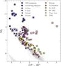
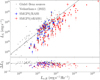
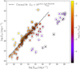

X-ray Counterparts to Stellar MeerKAT Galactic-Plane Radio Sources
Overview
Published in Astronomy & Astrophysics, Vol. 707, A193 (2026) · Read the paper (open access) · DOI: 10.1051/0004-6361/202556983
Magnetically active stars are among the few objects that shine brightly in both X-rays and radio. The X-rays come from million-degree plasma trapped in the star’s corona; the radio waves come from electrons spiralling along magnetic field lines. The two are physically linked, and the Güdel–Benz relation captures how: across active stars, X-ray and radio luminosity rise and fall together. That relation had been calibrated mostly on nearby stars observed at 5–9 GHz. This paper tests it in a very different regime — 1.3 GHz radio data across the Galactic plane from MeerKAT, matched to two X-ray surveys.
The Data
The starting point was the 629 stellar candidates identified as optical counterparts to MeerKAT radio sources in the SMGPS survey. Their Gaia positions were matched against the ROSAT All-Sky Survey (RASS) and the first eROSITA all-sky release (eRASS1) through VizieR, using a 3-arcsecond radius. In crowded Galactic fields, chance alignments are the main risk: a Monte Carlo test that randomised the X-ray source positions predicted about six false positives among 131 eRASS1 matches and two among 47 RASS matches — roughly 5% contamination in both cases, low enough to ignore. The result: 137 stars detected in radio, optical, and X-ray — 47 from RASS, 131 from eRASS1, and 41 in both.
Who These Stars Are
Cross-matching the sample against SIMBAD shows a mixed population rather than one stellar type: mostly K- and M-type stars, many of them young, plus a handful of interacting binaries (RS CVn, eclipsing, and spectroscopic systems). Placing all 137 on a Gaia colour–magnitude diagram separates the groups cleanly.

Gaia colour–magnitude diagram of the 137 stars with radio, optical, and X-ray detections, classified by stellar population.
Where RASS and eRASS1 overlap (41 stars), the two X-ray flux measurements agree well — Pearson r = 0.905, with most points within a factor of two of the 1:1 line. That consistency matters: it means differences between the surveys are mostly instrumental calibration rather than intrinsic stellar variability, so the two samples can be combined with confidence.
Radio Fingerprints
For every star, a radio brightness temperature was computed. It separates two physically different emission mechanisms: incoherent gyrosynchrotron radiation from mildly relativistic electrons (below about 1012 K) and coherent emission from a more exotic process (above it). Almost the whole sample sits below the threshold, consistent with gyrosynchrotron emission from stellar coronae — with two informative exceptions. Apep (AX J1600.9−5142), a colliding-wind Wolf–Rayet binary, reaches (4.8 ± 1.5) × 1012 K, placing it in the coherent regime; HD 124831, a G3V binary, is unusually faint at (8 ± 1) × 106 K.
Testing the Güdel–Benz Relation
Comparing radio and X-ray luminosities against the canonical relation from Williams et al. (2014) gives a clear, if nuanced, answer. The fitted slopes land close to the canonical exponent of 0.73 — 0.8 ± 0.1 for RASS (Kendall’s τ = 0.576) and 0.68 ± 0.04 for eRASS1 (τ = 0.626) — so the underlying scaling really does hold. But the sample sits systematically below the canonical normalisation: relative to their X-ray output, these stars are brighter in radio than the relation predicts. The most natural explanation is selection: at 1.3 GHz, only the most radio-active stars clear the detection threshold, which pushes the detected sample towards the radio-bright side. In that reading, the classical Güdel–Benz relation is better described as an upper envelope than a tight correlation.

Radio versus X-ray luminosity compared with the canonical Güdel–Benz relation, with fits to the RASS and eRASS1 samples.
The Coronal Cross-Check
A second test replaces X-ray luminosity with bolometric luminosity, the star’s total energy output. Early-type massive stars were excluded because their X-rays come from wind shocks, not coronae. For the remaining late-type stars, the fit is LX = 10(4.9±1.3) · Lbol(0.76±0.04), with most stars clustering near log(LX/Lbol) ≈ −3 — the saturation limit seen in rapidly rotating, magnetically active stars. The eROSITA sample makes the split visible directly: colouring points by log(LX/Lbol) separates coronally active stars from wind-driven emitters and shows early-type stars sitting below the −3 relation.

X-ray luminosity versus bolometric luminosity, colour-coded by log(LX/Lbol) to separate coronally active stars from wind-driven emitters.
Takeaways
Three conclusions stand out. First, the Güdel–Benz scaling holds across a new frequency regime and a much larger volume of the Galaxy. Second, at 1.3 GHz the relation behaves as an upper envelope rather than a tight law, an effect explained by the survey’s sensitivity rather than new physics. Third, the X-ray-to-bolometric comparison reinforces the picture of saturated coronae in active late-type stars, with early-type stars following a different, wind-driven path. Deeper eROSITA data releases (DR2/DR3) and eventually the SKA will make it possible to test these conclusions with larger, more sensitive samples.
Co-authored with P. J. Groot, D. A. H. Buckley, J. Robrade, A. D. Schwope, S. Freund, P. C. Schneider, and B. Stelzer.